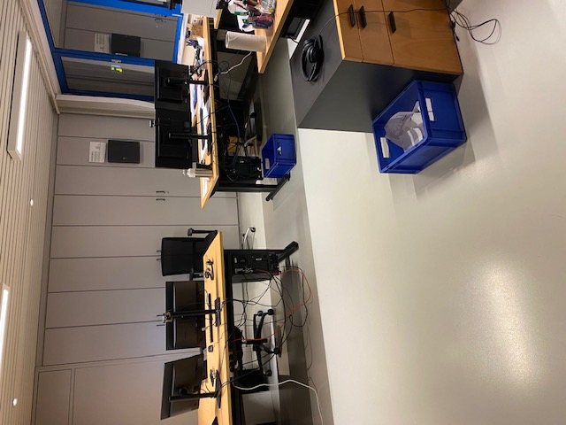

Dagverslag 1: Maandag 16/01
Begintijd: 8:30 Eindtijd: 16:15 Pauzes: 9:45 tot 10:00, 12:00 tot 12:30, 14:45 tot 15:00
Mijn eerste stagedag begon om 8.30 uur, ik voelde me heel zenuwachtig omdat dit mijn eerste stagedag was. Ik werd ontvangen door mijn stagementor, Dennis Boesmans. Van hem kreeg ik algemene informatie over het bedrijf en een rondleiding. Dit vond ik minder interessant omdat ik deze uitleg al eens heb gehoord op een eerder bedrijfsbezoek en omdat mijn papa, die op het bedrijf werkt, mij dit al verteld had. Mijn Pauzes had ik samen met mijn papa, wat ik fijn vond. Na de eerste pauze werd ik voorgesteld aan Michel en woonde ik een presentatie bij voor het personeel. Na de presentatie heeft Michel mij laten zien hoe je banken moet bijboeken en hoe de termijnfacturatie werkt. Dit vond ik heel leerzaam. Zelf heb ik niets gedaan vandaag omdat het vooral informatie was, maar ik hoop dat ik deze week toch iets mag doen.
Leerpunt van de dag: Ik wil leren om minder stress te hebben in nieuwe omgevingen.
Mijn dag in één woord: Spannend
Foto:

Dagverslag 2: Dinsdag 17/01
Begintijd: 8:30 Eindtijd: 16:15 Pauzes: 9:45 tot 10:00, 12:00 tot 12:30, 14:45 tot 15:00
Vandaag ben ik ontvangen door Michel, hij heeft mij uitgelegd wat serviceorders zijn en hoe je deze boekt. Ik heb geleerd dat mijn stagebedrijf twee soorten orders heeft, namelijk serviceorders en termijnorders. Daarnaast heeft Michel mij opnieuw laten zien hoe banken bijgeboekt moeten worden. Ik vond het fijn om dit nog eens op te frissen omdat het gisteren een stressvolle dag was. Na de pauze heb ik Dienie ontmoet, zij heeft mij getoond hoe een verkoopfactuur verstuurd wordt. Omdat mijn stagebedrijf ook de boekhouding doet voor hun vennootschap in het Verenigd Koninkrijk, heeft Dienie mij uitgelegd hoe zij verkoopfacturen in de boekhouding van Arodo UK zet. Na haar uitleg heb ik dit zelf mogen proberen, dit ging goed. Na de middagpauze heeft Dienie uitgelegd wat een aanmaning is en hoe dit in mijn stagebedrijf wordt gedaan. Mijn tweede dag verliep rustig en ik voelde me minder gestrest dan gisteren. Het was een leerzame dag, maar ik zou nog graag willen leren hoe het inkoopproces in mijn stagebedrijf werkt.
Leerpunt van de dag: Ik wil leren meer vragen te durven stellen.
Mijn dag in één woord: Interessant
Foto:

Dagverslag 3: Dinsdag 18/01
Begintijd: 8:00 Eindtijd: 16:15 Pauzes: 9:45 tot 10:00, 12:00 tot 12:30, 14:45 tot 15:00
Vandaag begon mijn dag om 8 uur, ik werd ontvangen door Michel. Michel heeft mij opnieuw laten zien hoe banken worden bijgeboekt en hoe het controleren van verkooporders en de facturatie daarvan werkt. Dit vond ik niet boeiend omdat ik dit al twee keer had gezien. Om 9 uur waren we klaar en heb ik voor school mogen werken tot aan de pauze. Na de pauze heeft Dienie mij kort opnieuw uitgelegd hoe verkoopfacturen en aanmaningen verstuurd worden. Na haar uitleg heb ik dit zelf mogen doen onder haar toezicht. Ik vond dat dit goed ging. Terwijl ik verkoopfacturen aan het versturen was liet Dienie mij even alleen, hieraan merkte ik dat ze vond dat ik het goed deed en me hierin vertrouwde. Voor de middagpauze heb ik de brievenbussen van mijn stagebedrijf leeggemaakt. Na de middagpauze heeft Michel uitgelegd wat afsluitwerkzaamheden zijn, ik leerde dat dit toch veel werk is. Michel heeft over twee onderdelen meer uitleg gegeven, namelijk de voorraadwaardering en de afschrijvingen. Dit vond ik interessant omdat dit helemaal nieuw was voor mij. Vandaag was een zeer rustige dag waarbij ik vaak niets kon doen, omdat we snel klaar waren.
Leerpunt van de dag: Ik wil leren betere antwoorden te formuleren.
Mijn dag in één woord: Saai
Foto:
